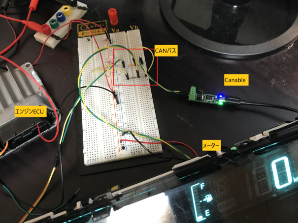
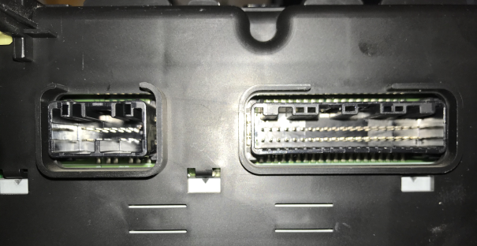
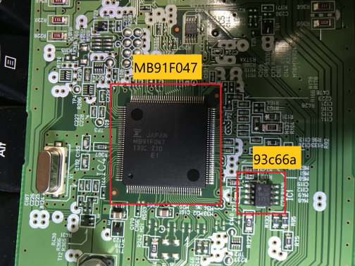
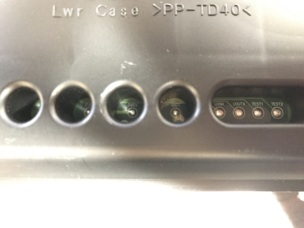
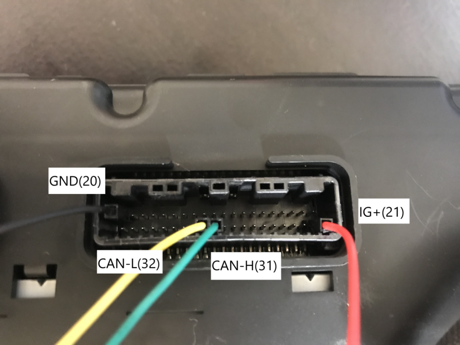
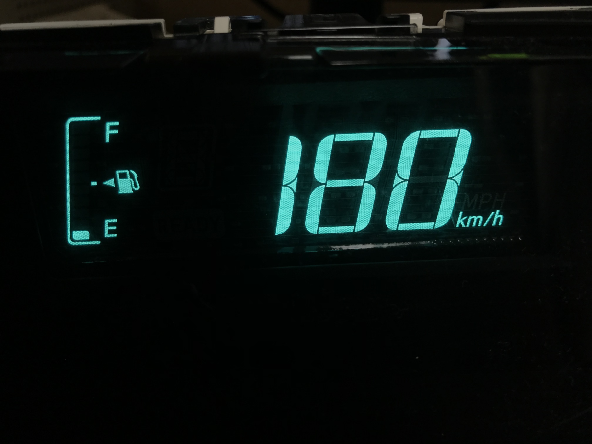

しゅーとです。
リアルECUシリーズ第二作目。
ヤフオクにてアクアのコンビネーションメータを手に入れたので色々いじってみた。
要約
スピードメーターが反応するCANIDを特定できた。
そしてその情報を使ってPS3コントローラでスピードメーターを操作してみたよ。
コントローラで動いているのだけ見たい人はこの動画を見てください。
検証環境
- DC安定化電源
- メーターへの給電用
- Canable
- CAN通信ができるUSB機器。(ファームウェアは candlelight に更新済み)
- ジャンパワイヤ
- メーターの IG+, GND, CAN-H, CAN-L に用いるので最低4本必要
ちなみに我が家のCANの検証環境は画像のような感じ。

CANだけであれば、電源・GNDと、CANバスとみなしたブレッドボード2ライン分を用意するだけで検証が可能。
これだけなら結構すぐ始められる。みんなも始めよう！
コンビネーションメーターの仕様
- メーカー: デンソー
- 型番: 83800-5CF71
- 使用車種: アクア NHP-10 (2013年製造)
- 端子1: 40pin
- コネクタ: 90980-12557 025型NHシリーズ40極F側コネクタ / 40P025K-NH-F
- 端子2 : 13pin
- コネクタ : 90980-12767
13P(090型)-SMHMメス端子側コネクタ / 13P090K-SMHM-F
- コネクタ : 90980-12767

ピン数がめちゃくちゃ多い。
ハードウェア解析
解析というほどできていない。ただの紹介である。
ハードウェア仕様

- CPU: MB91F047
- 富士通製MCU。
- EEPROM: 93C66a
- ODOメータ管理用。このチップを外しROMライタで書き換えることでODOメータの数値を好きに変えることができる。
DENSO デバッグポート
DENSOが工場で使っているデバッグポートがある。ここにアクセスすることでもEEPROMの内容を書き換えることができる模様。
ピンはそれぞれ「UINA」「UOUTA」「TEST1」「TEST2」と表記されており、実際にこのポートを使ってEEPROMの内容を書き換える怪しい製品が売っている (SFTool, iProg+, M Toolなど)。
ただ残念ながら書き換えるための技術的な情報はノウハウのためか公開されていない。

電源・通信用ピンの特定
アクアのコンビネーションメータは、40ピンコネクタと13ピンコネクタの合計53ピンある。
GNDピンはGNDのレイヤとの導通チェックで、IG+ピンは電源回路っぽいパターンから追うとすぐに推測が可能。
見つけ方は前回の記事で紹介している。
しかし、CAN-H、CAN-Lに関しては前回と違いピンが多すぎて推測が困難。
電子技術マニュアル
この問題を解決するのがトヨタが発行・販売している電子技術マニュアル。
電子技術マニュアルは車種ごとに発行されており、CD媒体で販売される。
新品の流通ルートはディーラーらしいが、中古であればヤフオク等でも手に入る。
電子技術マニュアルの「修理書」から、「内装ボデー&エレクトリカル」→「メーター」→「メーター&ゲージシステム」→「ECU端子配列」の順に開いていけばピンアサインが載っている。
ピンアサインは以下。
※端子1の右上を1、左下を40として数えていく。
- IG+: 21
- GND: 20
- CAN-H: 31
- CAN-L: 32

このとおりに接続すると無事に起動する。
CAN通信解析
スピードメーターを起動すると、以下のようなデータがひたすら垂れ流される。
can0 RX - - 442 [8] 42 04 00 00 02 00 00 00 'B.......'
can0 RX - - 610 [8] 20 00 00 64 C0 FF FF 20 ' ..d... '
can0 RX - - 4A6 [8] 08 90 07 FE FE FE FE 00 '........'
can0 RX - - 610 [8] 20 00 00 64 C0 FF FF 20 ' ..d... '
can0 RX - - 611 [8] 21 00 00 10 00 02 58 B8 '!.....X.'
can0 RX - - 616 [8] 2B 00 00 00 00 00 00 00 '+.......'
can0 RX - - 613 [8] 28 00 80 00 00 00 00 00 '(.......'
ただ今回のハックの目的は通信を見ることではなく、データを送ってメーターがどういう表示になるかという点なので無視する。
ODOメータ
ちなみにCANID: 611 の5~8バイトはODOメータ(総走行距離)の内容になっている。
02 58 B8 => 153784 (km)
CANデータファジングをしてみる
CANIDが 0 ~ 7FF の全てについて、全データFFなデータを送ってみる。
ファジングに使うツールはcan-utilsに入っているcangen。candumpが使える環境ならcangenも使える。
# cangen can0 -g 4 -I i -L 8 -D FFFFFFFFFFFFFFFF -n 2048 -v -v
動画を撮ったのでぜひどうぞ。
たまごっちがお亡くなりになった時みたいな音が鳴り響く。結構うるさい。
ファジング中、様々な表示灯や警告ブザー、そして車速が変わったのがわかると思う。
cangen、canplayerを使って車速周りを特定する
ファジングで車速が変わることを確認した。
よって何らかのCANIDで特定のデータを送ればスピードメーターが変わることがわかる。
ということで今回はGUIではなくCUIツールであるcangenとcanplayerを使って車速周りを特定していく。
ファジングデータの生成
まずは candump を使って SocketCANコンパクト形式でCANデータを記録・保存する。
# candump can0 -l
Disabled standard output while logging.
Enabling Logfile 'candump-2019-08-11_145103.log'
→’candump-2019-08-11_145103.log’というファイル名で保存される。
candumpをバックグラウンドで動かしながらcangenでファジングする。
# cangen can0 -g 4 -I i -L 8 -D FFFFFFFFFFFFFFFF -n 2048 -v -v
can0 000 [8] FF FF FF FF FF FF FF FF
can0 001 [8] FF FF FF FF FF FF FF FF
(snip)
can0 7FE [8] FF FF FF FF FF FF FF FF
can0 7FF [8] FF FF FF FF FF FF FF FF
オプションの意味。
-g 4 : 通信間隔 4ms
-I i : CANIDを0x000からインクリメント
-L 8 : データサイズは8バイト
-D FFFFFFFFFFFFFFFF : データペイロード「FFFFFFFFFFFFFFFF 」
-n 2048 : 通信回数。0からCANIDをインクリメントして2048回通信するので 0x000 ~ 0x7FF まで全てなめてくれる。
-v -v : ただの冗長表示オプション。
通信が終了したらcandumpを終了させる。
結果、’candump-2019-08-11_145103.log’というファイルでファジングデータを含むCAN通信がダンプされる。
ここからgrepしてファジングデータを取り出す。
# grep "FFFFFFFFFFFF" candump-2019-08-11_145103.log > candump-FF.log
これで CANID 0x000 から 0x7FF の、全てのデータが FF で埋まっているデータが手に入る！
ワンライナーでCAN IDを絞りながらリプレイ攻撃
canplayerはSocketCANコンパクト形式のログデータを標準入力からリプレイすることが可能。
candump-FF.log が下記のような形式のとき、
(1565531468.574284) can0 000#FFFFFFFFFFFFFFFF
(1565531468.578885) can0 001#FFFFFFFFFFFFFFFF
(1565531468.583324) can0 002#FFFFFFFFFFFFFFFF
...
ログにはCANインターフェイス名のあとにCANIDが記録されているので、CANID: 0x000 ~ 0x0FF のデータが取り出せる。
そしてこれをパイプでcanplayer に食わせる。
# grep "can0 0" candump-FF.log | canplayer can0=can0
canplayer の オプションの意味。(canplayer –help)
Interface assignment: 0..n assignments like <write-if>=<log-if> e.g. vcan2=can0 (send frames received from can0 on vcan2)ログに残っている インターフェイス名の置換ルールであり、同じcan0でやるなら can0=can0 とすればいい。
こうすると CANID 0x000 ~ 0x0FF かつ データ FFFFFFFFFFFFFFFF なCANメッセージが送られる。
データを送ったところスピードメーターが180kmを指すことを確認した。
あとは二分探索法みたいにファジングするCANIDの範囲を狭めていき特定していくことになる。grepやheadコマンドを使えば送るCANIDの範囲を簡単に調整できる。
前半(0x000 ~ 0x07F)を送る
# grep "can0 0" candump-FF.log| head -n 128 | canplayer can0=can0
→速度は変わらなかった。
後半(0x080 ~ 0x0FF)を送る
# grep "can0 0" candump-FF.log| tail -n 128 | canplayer can0=can0
→速度が変わった。0x080 ~ 0x0FF の範囲である。
0x080 から 64 個送る
# grep "can0 0" candump-FF.log | tail -n 128 | head -n 64 | canplayer can0=can0
→速度が変わった。0x080 から64 個の範囲である。
0x080 から 32 個送る
# grep "can0 0" candump-FF.log | tail -n 128 | head -n 32 | canplayer can0=can0
→変わらない。
0x0A0 から 32個送る
# grep "can0 0" candump-FF.log | tail -n 128 | head -n 64 | tail -n 32 | canplayer can0=can0
→変わった。0x0A0 から32 個の範囲である。
32は0x10 * 2 でありキリがいいので grep でCAN IDを絞る。
0x0A0 ~ 0x0AF
# grep "can0 0A" candump-FF.log | canplayer can0=can0
→変わらない。
0x0B0 ~ 0x0BF
# grep "can0 0B" candump-FF.log | canplayer can0=can0
→変わった。0x0B0 ~ 0x0BF の範囲である。
0x0B0 ~ 0B8
# grep "can0 0B" candump-FF.log | head -n 8 | canplayer can0=can0
→変わった。0x0B0 ~ 0x0B8 の範囲である
もうここまでくると8個から1個を推測するだけなので、cansend で打っていく。
…
…結果、車速に関するCAN IDは 0x0b4 だった。
なお、データ部8バイトのうちどのバイト部が車速を示すかどうかについては、cansendで各バイトデータを00にしてみたりFFにしてみたりするだけなので割愛。
コツを書いておくと、バイト単位ではなくビット単位で考えるとよい。
結果、6バイト目の1バイトが車速に関する部分ということがわかった。
# cangen can0 -g 4 -I 0b4 -L 8 -D 0000000000450000 -v -v
上記のように 4ms間隔で6バイト目に45を入れておけば、スピードメーターは180kmを指す。

こんなことを繰り返し車速以外も特定していく。
そしてCANID・データ部と機能の対応表ができあがった。
アクア メーター機能対応表
| CANID | データ部 | 意味 | 備考 |
|---|---|---|---|
| 0x0b4 | 00 00 00 00 00 XX 00 00 | 車速 | XX => Speed 車速の絶対値というか単位時間あたりの回転数のような感じ。短い時間に複数回送ると0 ~ 180kmの範囲で速度が上昇する。 |
| 0x1C4 | 00 00 00 00 00 00 00 01 | EV表示 | |
| 0x247 | XX XX 00 00 00 00 00 00 | ハイブリッドシステムインジケーター | XX => インジケータのメモリ 1バイト目は最下位ビットのみ見ている ちなみに1バイト目下位ビットが0かつ上位ビットが1のときエラー音が鳴る |
| 0x394 | NO CARE | エレクトリック パワーステアリング (EPS) 警告灯 | 該当CAN IDの通信が1秒以内の間隔で発生している限り、警告灯が消灯する。 1秒以上通信を発生させなかったらEPS警告灯が表示され、ピーッ！と鳴る データは何でもいい |
| 0x3B0 | 00 00 00 XX 00 00 00 00 | 車外気温 | XX => 気温 0x08 (-40℃) ～ 0x62 (50℃) 該当CAN IDの通信が10秒以内の間隔で発生しているとき、その通信の該当バイト部によって温度が表示される。 10秒以上通信を発生させなかったら「E」という文字が表示される |
| 0x3B6 | NO CARE | バッテリー残量 | 該当CAN IDの通信が3秒以内の間隔で発生しているとき、バッテリーメモリが1になる |
| 00 00 XX 00 00 00 00 00 | P ポジション要求表示灯 | 0x08 (00001000) : 点灯&ピーッ！と長く鳴る 0x80 (10000000) : 点灯&ピッ！と短く鳴る |
|
| 00 00 XX 00 00 00 00 00 | バッテリー残量 | 00000XXX : バッテリーメモリ 0 ～ 7 (3ビット)の範囲でメモリが増減する |
|
| 00 00 00 XX 00 00 00 00 00 | READY インジケータ | 0x04 (00000100) : 点滅 0x10 (00010000) : 点灯 |
|
| 00 00 00 XX 00 00 00 00 00 | 警告ブザー | 0x08 (00001000) : ピッと短く鳴る 一度鳴ったら該当ビットが0になるまで鳴らない ※恐らくREADY インジケータに関係あり 説明書「READY インジケータが点滅から点灯にかわり、ブザーが鳴れば、ハイブリッドシステムは正常に始動しています。」 |
|
| 00 00 00 XX 00 00 00 00 00 | 充電警告灯 | 0x20 (00100000) : 点灯 | |
| 00 00 00 00 XX 00 00 00 | ハイブリッドシステム異常警告灯 | 0x10 (00010000) : 高速点滅 0x20 (00100000) : 低速点滅 取り扱い説明書には「警告灯の点灯に合わせて警告ブザーが鳴ります」とあるが、このビットだけでは鳴らない |
|
| 0x3B7 | NO CARE | ブレーキ警告灯 ABS&ブレーキアシスト警告灯 スリップ表示灯 |
該当CAN IDの通信が1秒以上途絶えると、警告灯が点灯する。 |
| 00 XX 00 00 00 00 00 00 | スリップ表示灯 | 0x00 (00000000) : 消灯 0x02 (00000010) : 高速点滅 0x04 (00000100) : 低速点滅 0x07 (00000111) : 点灯 |
|
| XX 00 00 00 00 00 00 00 | 電子制御ブレーキ警告灯 | 0x00 (00000000) : 消灯 0x02 (00000010) : 低速点滅 0x04 (00000100) : 高速点滅 0x07 (00000111) : 点灯 ※一度表示が切り替わると通信が途絶えても状態が続く |
|
| XX 00 00 00 00 00 00 00 | ABS&ブレーキアシスト警告灯 | 0x00 (00000000) : 消灯 0x10 (00010000) : 高速点滅 0x18 (00011000) : 点灯 |
|
| XX 00 00 00 00 00 00 00 | ブレーキ警告灯 | 0x00 (00000000) : 消灯 0x40 (01000000) : 点灯 |
|
| 0x3B9 | F0 00 00 00 00 00 00 00 | 高水温警告灯 | |
| 0x3BB | 40 00 00 00 00 00 00 00 | エレクトリック パワーステアリング (EPS) 警告灯 | 該当CAN IDの通信が1秒以上途絶えると、警告灯が点灯する |
| 0x3BC | 00 00 00 00 00 XX 00 00 | ECO MODE 表示灯 | 0x01 (00000001) : 点灯 |
| 00 00 00 00 00 XX 00 00 | シフトポジション表示灯 | 0x02 (00000010): B 0x08 (00001000) : D |
|
| 00 XX 00 00 00 00 00 00 | シフトポジション表示灯 | 0x08 (00001000) : N 0x10 (00010000) : R ※ブザーも同時に鳴る 0x20 (00100000) : P |
|
| 0x400 ~ 43F | 謎の警告ブザー&充電警告灯 | ||
| 0x421 | 00 XX 00 00 00 00 00 00 | ハイブリッドシステム加熱警告灯 | 0x01 (00000001) : 点灯とブザー 0x02 (00000010) : 点灯 |
| 00 XX 00 00 00 00 00 00 | 駆動用電池残量低下警告灯 Pポジション要求表示灯 |
0x04 (00000100) : 2つのアイコン点滅とブザー 0x08 (00001000) : 駆動用電池残量低下警告灯の点滅と「ピーッピーッ」とブザーが複数回多く鳴る 0x10 (00010000) : 駆動用電池残量低下警告灯の点滅と「ピーーーッ」とブザーが非常に長く鳴る 0x80 (10000000) : 「ピーーーッ」とブザーだけ非常に長く鳴る |
|
| XX 00 00 00 00 00 00 00 | 充電警告灯 | 0x80 (10000000) : 点滅 |
色々特定できて満足！
PS3のコントローラでスピードメーターを操作
最後はグランドフィナーレとして、PS3のコントローラでスピードメーターを操作してみた。
以下の順序で動かしている。
起動時に各種警告灯を消去
R2でスピードを変化
十字キー 上下で外気温の変化
十字キー 左右でHVインジケータの変化
丸、バツ、四角、三角ボタンでシフトポジションの変化
ジョイスティックの動きに合わせてCAN通信を出すだけなので非常に簡単。
ソースコードは下においている。
まとめ
- ヤフオクからアクアのスピードメーターを買ってきた
- 通信を解析した
- 解析結果を使ってPS3コントローラで動かしてみた
あとは診断プロトコルの解析をしてKWP2000であることを突き止めたけど、SecurityAccess突破できないしレスポンス仕様が全くKWP2000に準拠してないしで難航したのでここには記載していない。
解析の息抜きにエンジンECUを買ってしまったので、次はエンジンECUに関する記事を書きたいです。